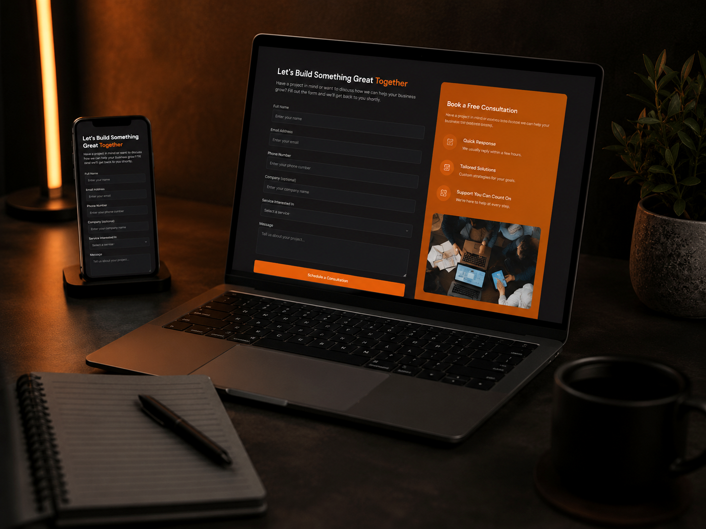

Starter
For a focused professional presence.
From R1,500- 1–3 pages
- Mobile-friendly design
- Contact or WhatsApp enquiry
- Basic SEO setup
- Launch support
Starting prices
Choose a starting package, then get a clear quote based on the pages, features and content your business actually needs.
Get a project quote →
For a focused professional presence.
From R1,500For businesses ready to look established.
From R3,500For businesses selling online.
From R6,500For businesses that need portals, bookings, dashboards or other custom online features.
Scoped QuoteOptional add-ons
Only add what your business actually needs.
Help connecting your website with your Google Business Profile and keeping your business details consistent online.
Add service, location, portfolio or information pages beyond the package scope.
Turn rough business information into clearer website wording and sections customers can understand.
Additional product, category or stock-entry work for online stores.
Simple guidance so you can update the parts of your WordPress website you need to manage.
Future fixes, updates or changes can be quoted separately after included support ends. See maintenance support →
Common questions
Starter websites begin from R1,500 and business websites from R3,500. The final quote depends on the number of pages, features, content and integrations.
E-commerce packages begin from R6,500. The final cost depends on products, checkout requirements, payment integrations and other store features.
For normal Spirit2k5 website projects, you see and review the agreed work before the website-design payment is due.
Third-party costs such as domains, hosting or paid services are confirmed with you before they are purchased or activated.
The timeline is confirmed after the page count, content and functionality are understood. Smaller projects can move faster when content and feedback are ready.
Need more detail?
See what changes the final price, how the packages differ and which type of build may fit your business. Read the website cost guide →